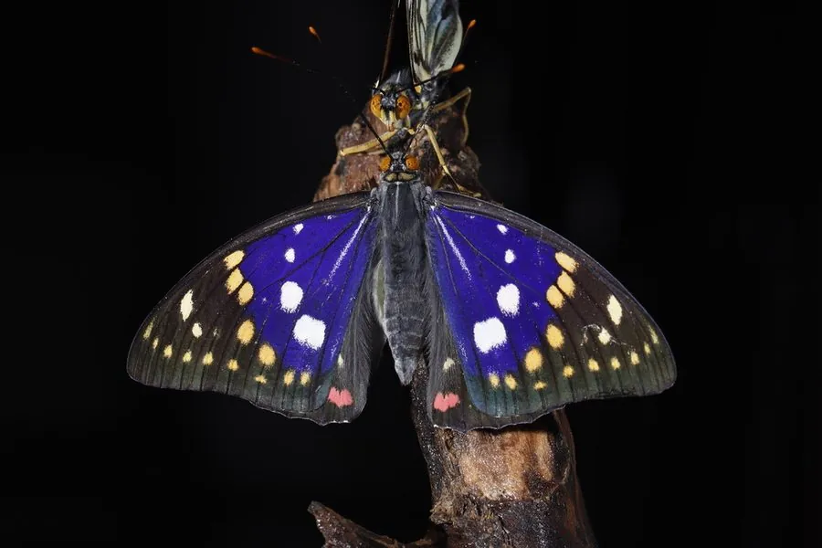

昆虫 · 动物界
大紫蛱蝶 Sasakia charonda

翅面黑褐、雄蝶翅上覆有蓝紫色金属光泽的日本国蝶，幼虫以朴树为食，中国东北至华南均有分布。
- 分类
- 门节肢动物门纲昆虫纲目鳞翅目科蛱蝶科属紫蛱蝶属
- 栖息环境
- 落叶阔叶林、林缘与朴树成片的沟谷
- 地理分布
- 日本、朝鲜半岛及中国东北、华北至华南山区
- 保护级别
- 日本国蝶；部分地区列入保护名录，寄主减少是主要威胁
物种志
大紫蛱蝶的翅展约八至十厘米。雄蝶前翅和后翅基部有一大片蓝紫色金属光泽，随光线角度变化而明暗流转，翅面其余部分黑褐，缀白色斑点，后翅臀角有橙色环斑。雌蝶体型更大，蓝紫光泽弱，白斑更发达，腹部肥硕。翅反面的斑纹与正面相近，但底色偏灰褐，停在树干上时轮廓破碎，不易被发现。
它分布于日本、朝鲜半岛和中国东北、华北至华南的山区，栖息在落叶阔叶林和林缘。成虫多在夏季出现，喜停在树干上吸食树汁和腐果，也爱在向阳处展翅晒太阳，雄蝶有较强的领域性。幼虫以朴树为食，越冬幼虫藏在树根落叶间，翌年春季取食嫩芽，化蛹于枝叶间。它被日本定为国蝶，森林砍伐与寄主减少是主要威胁。
形态与习性
- 翅展约八至十厘米，雌蝶更大
- 雄蝶色彩翅基大片蓝紫金属光泽
- 雌蝶紫光弱、白斑发达、腹部肥硕
- 食性幼虫取食朴树叶片
- 越冬幼虫在树根落叶间越冬
- 地位被日本定为国蝶
趣味知识
- 它是日本的国蝶，在日本各地的图鉴和邮票上频繁出现。
- 雄蝶翅上的紫色随视角明暗变化，是典型的金属结构色。
- 它的幼虫只吃朴树，朴树少了，蝶也就没了。